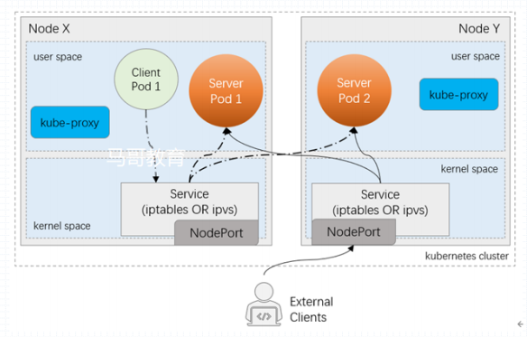

在k8s中Service是一个标准的资源类型，为动态的一组pod提供一个固定的访问入口，使用一个ClusterIP来标识的。ClusterIP存在于Cluser Network中。
Service的工作原理 1.Service如何识别其背后有多少Pod?
在每一个对应的Pod之上添加一个独特的标签，前端对应的Service将使用标签选择器来挑选中一组pod。任何能被Service的标签选择器所选中的目标都将作为该Service的后端端点。
Service不但能把标签选择器选中的Pod识别为自己的后端端点，他还能对后端端点做就绪状态检测，如果后端端点就绪，那就么他就会将其加入到自己的后端可用端点列表中去，否则将移除。而此功能并非由Service自己实现的，而是借助了一个中间组件endpoint来实现的。
endpint也是一个标准的资源类型。只不过Service会自动去管理Endpoint资源
1 2 3 4 root@k8s-master01:~/yaml/chapter04 NAME ENDPOINTS AGE demoapp 10.244.1.4:80,10.244.2.3:80,10.244.3.2:80 + 1 more... 5d12h kubernetes 172.16.11.71:6443 6d3h
Pod是APIServer中的一个数据Schema，Service和Endpoint也是。所以Service创建后真正能发挥作用是源自于Service Controller的组件。而Endpoint能发挥作用则是依赖于Endpint Controller。所以很多资源都会有其专用的控制器，来确保这个资源对应的意义能实现。
所以控制器至关重要，他们都打包在controller manager中，Service有Service的控制器来确保Service真正能工作。Endpoint有Endpoint控制器来确保其能正常工作。
一旦创建Service，需要为Service指定的基本的属性为标签选择器。随后Service控制器就会根据标签选择器创建一个同名的Endpoint资源。随后Endpoint控制器进行介入，他会使用endpoint标签选择器去查找究竟有多少个符合条件的Pod，他还会检查Pod的就绪状态。所以真正将Pod绑定到Service的并非Service控制器，而是Endpoint控制器。Service只负责调度，Endpoint一旦关联到了Pod，他会将其告诉给Service，从而这些Pod都将成为Service的后端端点。
Service是由ClusterIP来标识的。因此访问Service时可以直接从ClusterIP作为入口来进行访问。
在kubernetes中真正负责Service的组件叫做kube-Proxy的组件。
kube-proxy kube-proxy其实就是一个Service Controller位于各节点的代理进程(agent)。
kube-proxy代理模型 1.UserSpace模型：Pod访问Service 早期的kube-proxy是一个服务进程，他和nginx一样，所有的调度都是由kube-proxy实现的。所有的pod访问Service时，他的流量先从用户空间到达内核空间的Netfiliter上，而Service实现为iptables的一个拦截规则，iptables规则将流量拦截下来后不做调度，而是将其重定向回同样运行在该节点用户空间的kube-Proxy进程。而kube-proxy是一个代理服务器，能实现负载均衡，能实现虚拟主机。因此Pod的请求就被调度给用户空间的kube-proxy，由kube-proxy重新将其调度给其他节点上的Pod。
这种代理的性能极差，他的流量在用户空间和内核空间往返了2次再发往目标Pod。效率性能差。
2.iptables模型： pod发送请求时，报文依然会被内核中的iptables规则拦截，iptables拦截后不会将其发送给用户空间的kube-proxy，其自己内部直接就添加了调度规则，因此iptables不但能拦截还能实现调度。这种称之为iptables模式。
在此模型中，kube-proxy的作用是监视着APIServer中的所有Service的定义，并将其转换为本地的iptables规则。
这种模型的调度规则，在内核中直接就能完成，其效率比第一种UserSpace模型好的多，但是此种模型依旧存在问题。
iptables既要负责拦截又要负责调度，所以一个Service将会生成大量的规则。而一个k8s集群动则几千个Service，其将生成几万的iptables规则，每一次的pod到Service的流量经过接近5万条iptables规则的匹配，其性能可想而知。
3.ipvs模型： ipvs一个调度只需要一到两条规则，一定义集群，二向集群中添加后端端点。而当后端端点增多时其最多将成为ipvs第二条规则中的一个可选的后端端点。
此种模型1万的service最多生成2万的规则，其性能比iptables模型性能好的多。
因此在规模较大的k8s集群中，必然使用ipvs模型。
Service类型 Service的类型一共有4种：ClusterIP、NodePort、LoadBalancer、ExternalName。
ClusterIP Service创建后，为了让Service能够接受请求，并且能作为端点被访问，所以Service需要一个不变的IP地址，这个ip就成为ClusterIP，从而能作为接入内部Pod请求的IP地址，因而称之为ClusterIP。
通过集群内部IP地址来暴露服务，但是该地址仅在集群内部可达，他无法被集群外部的客户端访问。
NodePort NodePort是一种ClusterIP的增强类型。NodePort的Service不仅能被集群内部的客户端可见，还能被集群外部的客户端可见。他会于ClusterIP的功能之外，在每一个节点上使用一个相同的端口号将外部流量引入到该Service上来。

LoadBalancer LoadBalancer是NodePort的增强类型，此种类型多出现于公有云需要借助于云底层Iaas云服务上的LBaaS产品来按需管理LoadBalancer。如果没有这种条件，此类型将不可用
ExternalName k8s集群内的某个服务要访问集群外的服务时，需要借助集群上的KubeDNS来实现，服务的名称会被解析为一个CNAME记录，而CNAME名称会被DNS解析为集群外部的服务的IP地址。这种Service没有ClusterIP也没有NodePort.
Service资源定义格式 Service是名称空间级别的资源：
1 2 3 4 5 6 7 8 9 10 11 12 13 14 15 16 17 18 19 20 21 apiVersion: v1 kind: Service metadata: name: … namespace: … labels: key1: value1 key2: value2 spec: type <string> selector <map[string]string> ports： - name <string> protocol <string> port <integer > targetPort <string> nodePort <integer > clusterIP <string> externalTrafficPolicy <string> loadBalancerIP <string> externalName <string>
ClusterIP：建议由K8S动态指定一个； 也支持用户手动明确指定；
ServicePort：被映射进Pod上的应用程序监听的端口； 而且如果后端Pod有多个端口，并且每个端口都想通过SErvice暴露的话，每个都要单独定义。
最终接收请求的是PodIP和containerPort；
service示例 ClusterIP示例 1.创建Service清单
1 2 3 4 5 6 7 8 9 10 11 12 13 14 15 root@k8s-master01:~/yaml/chapter07 apiVersion: v1 kind: Service metadata: name: demoapp-svc namespace: default spec: clusterIP: 10.97.72.1 selector: app: demoapp ports: - name: http protocol: TCP port: 80 targetPort: 80
2.创建出service
1 2 root@k8s-master01:~/yaml/chapter07 service/demoapp-svc created
3.获取svc
1 2 3 root@k8s-master01:~/yaml/chapter07 NAME TYPE CLUSTER-IP EXTERNAL-IP PORT(S) AGE demoapp-svc ClusterIP 10.97.72.1 <none> 80/TCP 78s
4.查看svc的详细信息
1 2 3 4 5 6 7 8 9 10 11 12 13 14 15 16 root@k8s-master01:~/yaml/chapter07 Name: demoapp-svc Namespace: default Labels: <none> Annotations: <none> Selector: app=demoapp Type: ClusterIP IP Family Policy: SingleStack IP Families: IPv4 IP: 10.97.72.1 IPs: 10.97.72.1 Port: http 80/TCP TargetPort: 80/TCP Endpoints: 10.244.1.4:80,10.244.2.3:80,10.244.3.2:80 + 1 more... Session Affinity: None Events: <none>
5.查看对应的endpoint资源
1 2 3 4 5 6 7 root@k8s-master01:~/yaml/chapter07 NAME ENDPOINTS AGE demoapp 10.244.1.4:80,10.244.2.3:80,10.244.3.2:80 + 1 more... 6d8h demoapp-svc 10.244.1.4:80,10.244.2.3:80,10.244.3.2:80 + 1 more... 5m7s kubernetes 172.16.11.71:6443 6d22h
6.对服务的ip发送请求
1 2 3 4 5 6 7 8 9 10 11 12 root@k8s-master01:~/yaml/chapter07 iKubernetes demoapp v1.0 !! ClientIP: 10.244.0.0, ServerName: demoapp-5f7d8f9847-jrfm6, ServerIP: 10.244.2.3! root@k8s-master01:~/yaml/chapter07 curl: (7) Failed to connect to 10.97.72.1 port 80: Connection refused root@k8s-master01:~/yaml/chapter07 iKubernetes demoapp v1.0 !! ClientIP: 10.244.0.0, ServerName: demoapp-5f7d8f9847-r7h7b, ServerIP: 10.244.1.4! root@k8s-master01:~/yaml/chapter07 iKubernetes demoapp v1.0 !! ClientIP: 10.244.0.0, ServerName: demoapp-5f7d8f9847-v7ft8, ServerIP: 10.244.3.2! root@k8s-master01:~/yaml/chapter07 iKubernetes demoapp v1.0 !! ClientIP: 10.244.0.0, ServerName: demoapp-5f7d8f9847-v7ft8, ServerIP: 10.244.3.2!
NodePort示例 1.编写Service资源清单。
1 2 3 4 5 6 7 8 9 10 11 12 13 14 15 16 root@k8s-master01:~/yaml/chapter07 kind: Service apiVersion: v1 metadata: name: demoapp-service-nodeport spec: type : NodePort clusterIP: 10.97.56.1 selector: app: demoapp ports: - name: http protocol: TCP port: 80 targetPort: 80 nodePort: 31398
2.应用配置清单
1 2 3 4 5 6 root@k8s-master01:~/yaml/chapter07 service/demoapp-service-nodeport created root@k8s-master01:~/yaml/chapter07 NAME TYPE CLUSTER-IP EXTERNAL-IP PORT(S) AGE demoapp-service-nodeport NodePort 10.97.56.1 <none> 80:31398/TCP 59s
3.测试访问
1 2 3 4 5 6 7 8 9 10 root@k8s-master01:~/yaml/chapter07 iKubernetes demoapp v1.0 !! ClientIP: 10.244.0.0, ServerName: demoapp-5f7d8f9847-v7ft8, ServerIP: 10.244.3.2! root@k8s-master01:~/yaml/chapter07 iKubernetes demoapp v1.0 !! ClientIP: 10.244.0.0, ServerName: demoapp-5f7d8f9847-jrfm6, ServerIP: 10.244.2.3! root@k8s-master01:~/yaml/chapter07 curl: (7) Failed to connect to 10.97.56.1 port 80: Connection refused root@k8s-master01:~/yaml/chapter07 iKubernetes demoapp v1.0 !! ClientIP: 10.244.0.0, ServerName: demoapp-5f7d8f9847-r7h7b, ServerIP: 10.244.1.4! root@k8s-master01:~/yaml/chapter07 iKubernetes demoapp v1.0 !! ClientIP: 10.244.0.0, ServerName: demoapp-5f7d8f9847-jrfm6, ServerIP: 10.244.2.3!
4.从集群外部访问时需要访问集群的各个节点的nodeport
LoadBalancer示例 LoadBalancer需要依赖于云供应商底层的LBaaS，如果没有LBaas将会降级为NodePort
1.编写配置清单
1 2 3 4 5 6 7 8 9 10 11 12 13 14 15 16 17 root@k8s-master01:~/yaml/chapter07 kind: Service apiVersion: v1 metadata: name: demoapp-loadbalancer-svc spec: type : LoadBalancer selector: app: demoapp ports: - name: http port: 80 targetPort: 80 protocol: TCP
2.应用配置清单
1 2 root@k8s-master01:~/yaml/chapter07 service/demoapp-loadbalancer-svc created
3.查看所创建出的svc
1 2 3 4 5 6 root@k8s-master01:~/yaml/chapter07 NAME TYPE CLUSTER-IP EXTERNAL-IP PORT(S) AGE SELECTOR demoapp-loadbalancer-svc LoadBalancer 10.98.79.128 <pending> 80:30373/TCP 105s app=demoapp
4.测试访问
1 2 3 4 5 6 root@k8s-master01:~/yaml/chapter07 iKubernetes demoapp v1.0 !! ClientIP: 10.244.0.0, ServerName: demoapp-5f7d8f9847-r7h7b, ServerIP: 10.244.1.4! root@k8s-master01:~/yaml/chapter07 iKubernetes demoapp v1.0 !! ClientIP: 10.244.0.0, ServerName: demoapp-5f7d8f9847-r7h7b, ServerIP: 10.244.1.4! root@k8s-master01:~/yaml/chapter07 iKubernetes demoapp v1.0 !! ClientIP: 10.244.0.0, ServerName: demoapp-5f7d8f9847-jrfm6, ServerIP: 10.244.2.3!
ExternalIP示例 以上示例都需要使用外部的负载均衡器来实现将外部流量引入节点内部。如果希望不使用节点外部的负载均衡器，而直接使用节点的IP加上众所周知的Port来进行访问，而无需共享宿主机的网络名称空间，这也是可以实现的。我们可以在Service上手动添加一个外部的IP来实现。
1.在集群内部添加一个外部IP
1 2 3 4 5 6 7 8 9 10 11 root@k8s-master01:~/yaml/chapter07 root@k8s-master01:~/yaml/chapter07 2: eth0: <BROADCAST,MULTICAST,UP,LOWER_UP> mtu 1500 qdisc fq_codel state UP group default qlen 1000 link/ether 52:54:00:2b:c0:ec brd ff:ff:ff:ff:ff:ff inet 172.16.11.71/24 brd 172.16.11.255 scope global eth0 valid_lft forever preferred_lft forever inet 172.16.11.75/32 scope global eth0 valid_lft forever preferred_lft forever inet6 fe80::5054:ff:fe2b:c0ec/64 scope link valid_lft forever preferred_lft forever
2.编写Service配置清单
1 2 3 4 5 6 7 8 9 10 11 12 13 14 15 16 17 root@k8s-master01:~/yaml/chapter07 kind: Service apiVersion: v1 metadata: name: demoapp-externalip-svc namespace: default spec: type : ClusterIP selector: app: demoapp ports: - name: http protocol: TCP port: 80 targetPort: 80 externalIPs: - 172.16.11.75
3.查看SVC
1 2 3 4 5 6 7 root@k8s-master01:~/yaml/chapter07 service/demoapp-externalip-svc created root@k8s-master01:~/yaml/chapter07 NAME TYPE CLUSTER-IP EXTERNAL-IP PORT(S) AGE demoapp-externalip-svc ClusterIP 10.96.141.139 172.16.11.75 80/TCP 17s
4.测试访问
1 2 3 4 5 6 7 8 root@k8s-master01:~/yaml/chapter07 iKubernetes demoapp v1.0 !! ClientIP: 10.244.0.0, ServerName: demoapp-5f7d8f9847-r7h7b, ServerIP: 10.244.1.4! root@k8s-master01:~/yaml/chapter07 iKubernetes demoapp v1.0 !! ClientIP: 10.244.0.0, ServerName: demoapp-5f7d8f9847-v7ft8, ServerIP: 10.244.3.2! root@k8s-master01:~/yaml/chapter07 iKubernetes demoapp v1.0 !! ClientIP: 10.244.0.0, ServerName: demoapp-5f7d8f9847-r7h7b, ServerIP: 10.244.1.4! root@k8s-master01:~/yaml/chapter07 iKubernetes demoapp v1.0 !! ClientIP: 10.244.0.0, ServerName: demoapp-5f7d8f9847-v7ft8, ServerIP: 10.244.3.2!
有了这种方法我们只需要将此外部地址利用keepalived在多个结点间游走即可以防止单点失败问题。